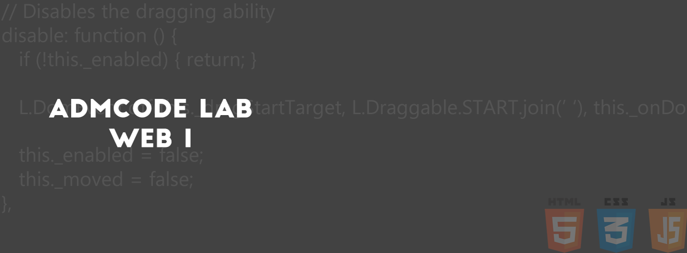

Material da quarta semana do curso!
Vamos falar sobre as imagens?


Vamos falar sobre os links?
Ir para o site do Google - http://google.com.br
Ir para o site do Google - http://google.com.br
Abrir o site do Facebook em outra aba - http://facebook.com
Abrir o site do Facebook nessa mesma aba (página) - http://facebook.com